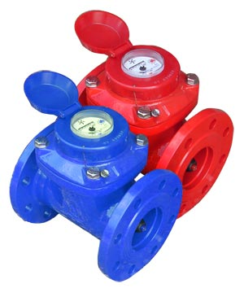

Турбинные расходомеры (счётчики воды) СТВХ, СТВУ
Расходомер предназначен для измерения объема воды, протекающей в системах холодного и горячего водоснабжения с температурой от 5 до 40°С (для СТВХ) и от 5 до 90°С (для СТВУ).
Водосчетчик сухоходного исполнения. В конструкции прибора водомера используются часовые камни, что повышает точность работы. Счетный механизм защищен от попадания влаги и пыли. За счет простоты и надежности конструкции обеспечивается долгий срок службы расходомера прибора.
| Измеряемая среда | Питьевая вода по ГОСТ Р 51232 и сетевая вода по СНиП 41-02 | ||||
|---|---|---|---|---|---|
| Диаметр условного прохода, мм | 50 | 65 | 80 | 100 | 150 |
| Расход воды счетчиков СТВХ, м3/ч | |||||
| - минимальный, Qmin | 0,60 | 1,05 | 1,60 | 2,40 | 2,50 |
| - переходный, Qt | 1,50 | 3,50 | 5,50 | 9,0 | 12,0 |
| - номинальный, Qn | 15,0 | 25,0 | 40,0 | 60,0 | 150,0 |
| - максимальный, Qmax | 30,0 | 70,0 | 120,0 | 180,0 | 425,0 |
| Порог чувствительности | 0,50 | 0,50 | 0,60 | 1,0 | 1,30 |
| Расход воды счетчиков СТВУ, м3/ч | |||||
| - минимальный, Qmin | 0,60 | 1,50 | 1,90 | 2,50 | 5,50 |
| - переходный, Qt | 1,50 | 5,50 | 6,00 | 7,0 | 12,0 |
| - номинальный, Qn | 15,0 | 25,0 | 40,0 | 60,0 | 150,0 |
| - максимальный, Qmax | 30,0 | 60,0 | 100,0 | 160,0 | 320,0 |
| Порог чувствительности | 0,50 | 0,60 | 0,70 | 0,90 | 1,3 |
| Расход воды при потере давления 0,01 Мпа, qд, м3/ч | 20 | 40 | 70 | 130 | 315 |
| Максимальныйобъем воды измеренный за : | |||||
| - сутки, м3 | 370 | 900 | 1650 | 2900 | 5700 |
| - месяц,м3 | 11000 | 18000 | 33000 | 58000 | 114000 |
| Емкость счетного механизма, м3 | 999999 | 9999999 | |||
| Минимальная цена деления, м3 | 0,01 | 0,1 | |||
| Пределы допускаемой относительной погрешности в интервале диапазона измерений, % | |||||
| - от Qmin до Qt | ±5% | ||||
| -от Qt (включительно) до Qmax | ±2% | ||||
| Температура измеряемой среды: | |||||
| - для СТВХ, 0С | 5-40 | ||||
| - для СТВУ, 0С | 5-90 | ||||
| Давление измеряемой среды, МПа | не более 1,6 | ||||
| Темп-ра окружающего воздуха, 0С | от 5 до 60 | ||||
| Относительная влажность, % | до 98 | ||||
| Диаметр условного прохода, мм | 50 | 65 | 80 | 100 | 150 |
|---|---|---|---|---|---|
| Монтажная длина, L | 200 | 200 | 225 | 250 | 300 |
| H | 257 | 267 | 280 | 287 | 350 |
| H1 | 330 | 340 | 350 | 365 | 425 |
| Д | 165 | 187 | 200 | 220 | 285 |
| А | 125 | 145 | 160 | 180 | 240 |
| d | 18 | 18 | 18 | 18 | 23 |
| Количество отверстий, шт | 4 | 4 | 4 | 8 | 8 |
| Масса, кг | 13 | 14,5 | 15,5 | 18,5 | 44 |
По вопросам приобретения счётчиков звоните по телефону (495) 745-60-52